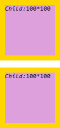
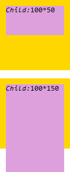
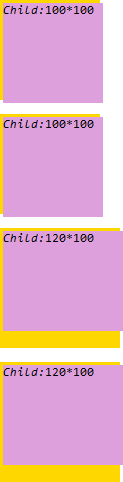
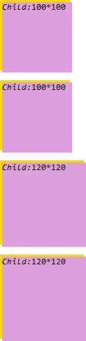

根据 CSS2.1 规范中的描述，'width' 和 'height' 特性当指定百分比的值时，其百分比将参照其 包含块 的生成框进行计算。
'min-width' 和 'max-width' 可以限定内容宽度 (content width) 的范围。下列算法描述了这两个特性对 'width' 特性的 使用值 产生的影响：
上述步骤不影响这些宽度特性实际计算值。参见： 10.4 Minimum and maximum widths: 'min-width' and 'max-width'
'min-height' 和 'max-height' 可以限定框高度 (box height) 的范围。下列算法描述了这两个特性对 'width' 特性的 使用值 产生的影响：
上述步骤不影响这些高度特性实际计算值。参见： 10.7 Minimum and maximum heights: 'min-height' and 'max-height'
关于 'width' 及 'height' 特性的更多资料，请参见 CSS2.1 规范 10.2 Content width: the 'width' property、10.5 Content height: the 'height' property 中的内容。
关于 'min-width' 及 'max-width' 特性的更多资料，请参见 CSS2.1 规范 10.4 Minimum and maximum widths: 'min-width' and 'max-width' 中的内容。
关于 'min-height' 及 'max-height' 特性的更多资料，请参见 CSS2.1 规范 10.7 Minimum and maximum heights: 'min-height' and 'max-height' 中的内容。
在 IE7(S) Firefox 中，若元素的高度出于某种原因使用了其 'min-height' 或 'max-height' 设定的值，则其生成的包含块的高度为元素的实际高度；而在 IE8(S) Chrome Safari Opera 中，生成的包含块的高度仍然为元素原始的高度。
此问题会造成不同浏览器对于包含块的高度计算出现差异，从而使所有参照其计算的元素的高度出现差异。
| 所有浏览器 |
|---|
下面将分别以普通流与定位流两种情形进行分析。
注: 由于 IE6 IE7(Q) IE8(Q) 不支持 'min-height'、'max-height' 特性，故本文不再对这些浏览进行测试及分析。
分析以下代码：static_min_max_height.html
<!DOCTYPE html> <html> <head> </head> <body style="font:12px Consolas;
margin:0;"> <div id="p1" style="background:gold; width:50px; height:50px;
min-width:100px; min-height:100px; padding:10px;"> <div id="c1"
style="width:100%; height:100%; background:plum;"></div> </div> <br />
<div id="p2" style="background:gold; width:150px; height:150px; max-width:100px;
max-height:100px; padding:10px;"> <div id="c2" style="width:100%; height:100%;
background:plum;"></div> </div> <script> function $(id) { return
document.getElementById(id); } $("c1").innerHTML = "<em>Child:</em>" +
$("c1").clientWidth + "*" + $("c1").clientHeight;
$("c2").innerHTML = "<em>Child:</em>" + $("c2").clientWidth +
"*" + $("c2").clientHeight; </script> </body> </html>
上面代码包含两组，每组的结构相同，均为一个设定了 ‘padding:10px’ 的 DIV 元素内包含了一个宽高都设置了 ‘100%’ 的 DIV 元素。
两组的区别为，第一组外层 DIV 元素【p1】的宽高均为 ‘50px’，但 'min-width' 与 'min-height' 特性均设置了 ’100px‘；第二组外层 DIV 元素【p2】的宽高均为
'150px'，但 'max-width' 与 'max-height' 特性均设置了 '100px'。
根据 CSS2.1 规范所述，第一组【p1】的宽度计算值应为 '100px'，高度计算值应为 '100px'；第二组【p2】的宽度计算值应为 '100px'，高度计算值应为 '100px'。
这段代码在不同浏览器中运行结果如下：
| IE7(S) Firefox | IE8(S) Chrome Safari Opera |
|---|---|
|  |  |
分析以下代码：pos_min_max_height.html
<!DOCTYPE html> <html> <head> </head> <body style="font:12px Consolas;
margin:0;"> <div id="p3" style="background:gold; width:50px; height:50px;
min-width:100px; min-height:100px; position:relative;"> <div id="c3"
style="width:100%; height:100%; background:plum; position:absolute; left:3px;
top:3px;"></div> </div> <br /> <div id="p4"
style="background:gold; width:150px; height:150px; max-width:100px; max-height:100px;
position:relative;"> <div id="c4" style="width:100%; height:100%;
background:plum; position:absolute; left:3px; top:3px;"></div> </div> <br />
<div id="p5" style="background:gold; width:50px; height:50px; min-width:100px;
min-height:100px; position:relative; padding:10px;"> <div id="c5"
style="width:100%; height:100%; background:plum; position:absolute; left:3px;
top:3px;"></div> </div> <br /> <div id="p6"
style="background:gold; width:150px; height:150px; max-width:100px; max-height:100px;
position:relative; padding:10px;"> <div id="c6" style="width:100%;
height:100%; background:plum; position:absolute; left:3px; top:3px;"></div> </div>
<script> function $(id) { return document.getElementById(id); } $("c3").innerHTML =
"<em>Child:</em>" + $("c3").clientWidth + "*" +
$("c3").clientHeight; $("c4").innerHTML = "<em>Child:</em>" +
$("c4").clientWidth + "*" + $("c4").clientHeight;
$("c5").innerHTML = "<em>Child:</em>" + $("c5").clientWidth +
"*" + $("c5").clientHeight; $("c6").innerHTML =
"<em>Child:</em>" + $("c6").clientWidth + "*" +
$("c6").clientHeight; </script> </body> </html>
上面代码包含四组，每组的结构相同，均为 'position' 特性为 'relative' 的 DIV 元素内包含了一个宽高都设置了 100% 的 DIV 绝对定位元素。
第一、三组外层 DIV 元素的宽高均为 50px，但 'min-width' 与 'min-height' 特性均设置了 100px；第二、四组外层 DIV 元素的宽高均为 150px，但 'max-width'
与 'max-height' 特性均设置了 100px。
第三、四组为外层 DIV 元素设定了 padding:10px。
这段代码在不同浏览器中运行结果如下：
| IE7(S) | IE8(S) Firefox Chrome Safari Opera |
|---|---|
|  |  |
根据 CSS2.1 规范，非行内级绝对定位元素的偏移量参照为其包含块的 padding-box，则若设定了 'padding' 不会对偏移产生影响。
通过上面的测试样例可知，仅包含块区域的高度在各浏览器中会出现差异。
在子孙元素参照设定并在计算值上应用了 'min-height'、'max-height' 特性的元素生成的包含块的高度时需格外注意，此时尽量避免使用百分比等需要参照包含块计算的单位。
由于第二个测试样例中，对于绝对定位元素，各浏览器容器生成的包含块的尺寸均使用了宽度和高度的最终计算值，不为容器设置 'padding' 特性则还会消除 IE7(S) 中的问题，继而可以达到各浏览器兼容的效果1。如：res.html
<body style="font:12px Consolas; margin:0;"> <div id="p1"
style="background:gold; width:50px; height:50px; min-width:100px; min-height:100px;
position:relative;"> <div id="c1" style="background:plum; position:absolute;
top:10px; bottom:10px; left:10px; right:10px;"></div> </div> <br /> <div
id="p2" style="background:gold; width:150px; height:150px; max-width:100px;
max-height:100px; position:relative;"> <div id="c2" style="background:plum;
position:absolute; top:10px; bottom:10px; left:10px; right:10px;"></div> </div>
<script> function $(id) { return document.getElementById(id); } $("c1").innerHTML =
"<em>Child:</em>" + $("c1").clientWidth + "*" +
$("c1").clientHeight; $("c2").innerHTML = "<em>Child:</em>" +
$("c2").clientWidth + "*" + $("c2").clientHeight; </script>
</body>
注: 这里的浏览器不包括 IE6 IE7(Q) IE8(Q)。
| 操作系统版本: | Windows 7 Ultimate build 7600 |
|---|---|
| 浏览器版本: |
IE7
IE8 Firefox 3.6.9 Chrome 7.0.517.5 dev Safari 5.0.2 Opera 10.62 |
| 测试页面: |
static_min_max_height.html
pos_min_max_height.html res.html |
| 本文更新时间: | 2010-09-15 |
min-height max-height min-width max-width height width containing block percent 包含块 宽度 高度